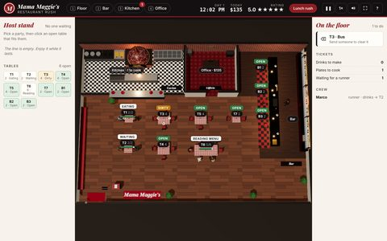
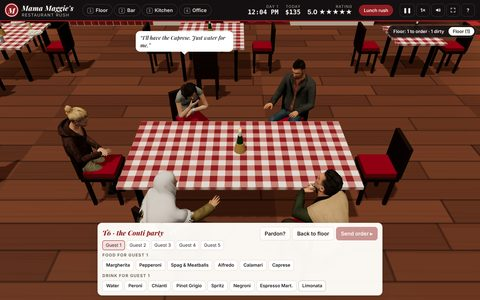
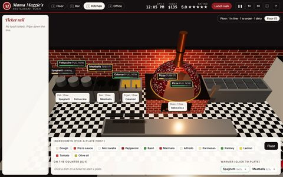
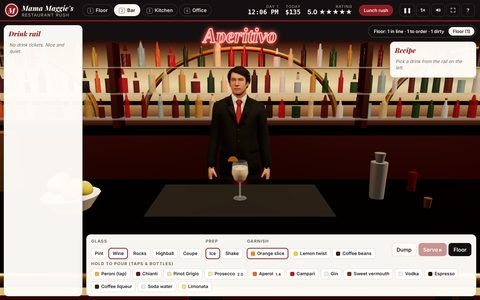
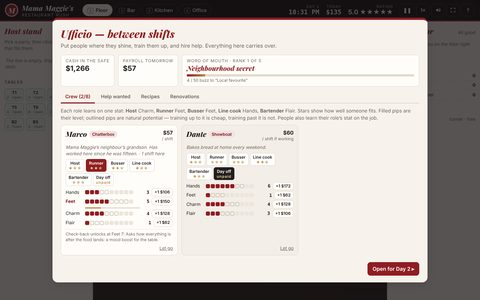
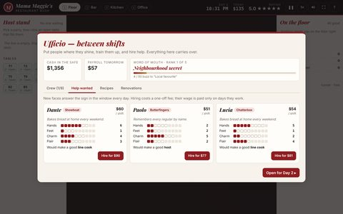
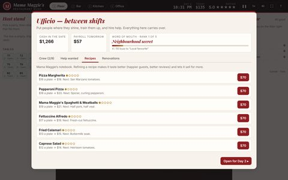
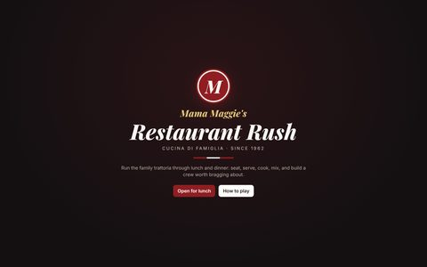

Game · A restaurant-management sim · HTML / JavaScript / 3D
Mama Maggie's Restaurant Rush
Run lunch and dinner at a family trattoria: seat the line, take the orders, work the bar and the wood-fired oven, and keep every table happy until the doors lock.
My restaurant-management game is set in Mama Maggie's, a family-owned Italian trattoria with an old-meets-new look in deep red, black, and white. You run lunch service from an overhead map of the dining room, and whenever a job needs your hands you drop into a close-up 3D station: down to a table to take an order, behind the bar to mix a drink, or onto the line to fire a pizza. The dining room keeps moving while you're away, and that's where the rush comes from. Between shifts you run the back office: hire and train a crew, refine the family recipes, and watch the trattoria's reputation grow.
Controls: 1 floor, 2 bar, 3 kitchen, 4 office, Esc back to the floor, Space pause, , . slower or faster (½× to 3×), H help; everything else is a click. Best on a computer.
Tip: click inside the game first so it can detect your keyboard. Your days, cash, crew, and recipes are saved in your browser. On a small screen, try the full-screen version.
Screenshots
















How it plays
- Lunch and dinner. Every day has two services. You run the rushes yourself, a few minutes each at normal speed; in the quieter hours either side, your crew runs the room on their own while the clock speeds up, and you can step in whenever you like. Everything keeps running while you're busy somewhere else.
- Hosting. Parties of one to six line up by the door. Pick one and seat them at a table that fits before they lose patience; couples and solo diners can take a seat at the bar.
- Serving. When a table is ready, the camera drops down to it and each guest says what they'd like. The words fade, so you have to listen: asking "Pardon?" costs a little patience, and wrong items upset the table.
- The kitchen. Build pizzas from dough, sauce, cheese, and toppings, then bake them in the wood-fired oven, turning them halfway. Boil spaghetti and fettuccine, simmer meatballs, and fry calamari on the line, pulling each one in its perfect window. Then plate it and send it.
- The bar. Mix every drink by its recipe: the right glass, ice or no ice, hold each bottle to pour to the line, shake if it needs it, garnish, and serve. Each step counts toward the drink's quality.
- Managing the room. Guests' moods drain while they wait. Unhappy tables ask for the manager, and you decide how to make it right: an apology, a tiramisù on the house, or half off the bill. Tips follow the mood, and dirty tables need clearing before the next party can sit.
- The crew. Three people answer the help-wanted sign every day, each with four strengths: Hands in the kitchen, Feet on the floor, Charm with guests, and Flair behind the bar, plus a personality quirk, like a chatterbox guests love or a showboat who earns extra tips. Put them in the roles they fit (host, runner, busser, line cook, or bartender), and they take that work off your hands.
- Training. Everyone has a natural potential in each stat. Training up to it is cheap, so you can lean into what someone does best, or pay more to push past it and shore up a weakness. Staff also improve with experience on the job, and each role unlocks a new skill once its stat is high enough.
- Recipes and reputation. Refining a recipe makes the dish taste better and sell for more. Good reviews spread by word of mouth, moving the trattoria up five ranks, from Neighbourhood secret to Worth the trip. Each rank brings bigger crowds, and from the second rank on, a food critic visits every shift.
How it's built
Mama Maggie's Restaurant Rush is built with three.js and Vite. It loads as a small page that fetches the rest as it's needed: the 3D engine and the restaurant first, then each station the first time you open it, and each guest's model when they walk in. Scenery that shares a material is merged at start-up, so the dining room draws in a few hundred calls instead of more than a thousand. The people are animated avatars from Microsoft's open-source Rocketbox library, converted and compressed for the web. The simulation is kept separate from the graphics, so the whole restaurant can also run without them: a test bot plays complete days in Node to check the balance. Progress saves in the browser.